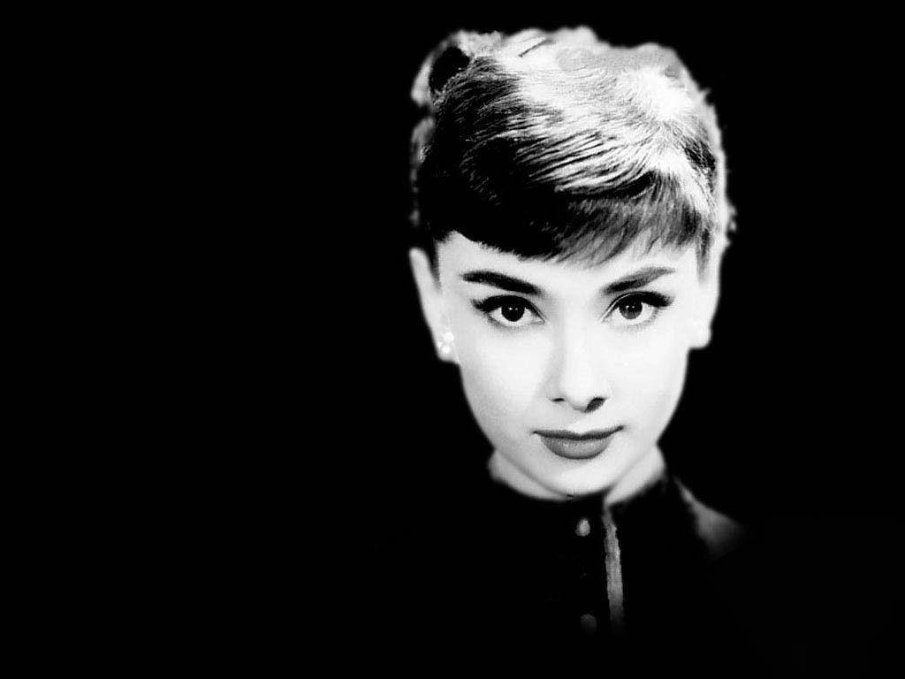

Audrey Hepburn
1929-1993

Nothing is impossible, the word itself says 'I'm possible'!
Audrey Hepburn (born Audrey Kathleen Ruston; 4 May 1929 – 20 January 1993) was a British actress and humanitarian. Recognised as both a film and fashion icon, she was ranked by the American Film Institute as the third-greatest female screen legend from the Golden Age of Hollywood, and was inducted into the International Best Dressed List Hall of Fame.
Born in Ixelles, Brussels, Hepburn spent parts of her childhood in Belgium, England, and the Netherlands. She studied ballet with Sonia Gaskell in Amsterdam beginning in 1945 and with Marie Rambert in London starting in 1948. She began performing as a chorus girl in West End musical theatre productions and then had minor appearances in several films. Hepburn starred in the 1951 Broadway play Gigi after being spotted by the French novelist Colette, on whose work the play was based.
She rose to stardom in the romantic comedy Roman Holiday (1953), alongside Gregory Peck, for which she was the first actress to win an Oscar, a Golden Globe Award, and a BAFTA Award for a single performance. That same year Hepburn won a Tony Award for Best Lead Actress in a Play for her performance in Ondine. She went on to star in a number of successful films, such as: Sabrina (1954), in which Humphrey Bogart and William Holden compete for her affection; Funny Face (1957) a musical in which she sang her own song parts; the drama The Nun's Story (1959); the romantic comedy Breakfast at Tiffany's (1961); the thriller-romance Charade (1963), opposite Cary Grant; and the musical My Fair Lady (1964). In 1967 she starred in the thriller Wait Until Dark receiving Academy Award, Golden Globe and BAFTA nominations. After that she only occasionally appeared in films, one being Robin and Marian (1976) with Sean Connery. Her last recorded performances were in the 1990 documentary television series Gardens of the World with Audrey Hepburn.
She won three BAFTA Awards for Best British Actress in a Leading Role. In recognition of her film career, she received BAFTA's Lifetime Achievement Award, the Golden Globe Cecil B. DeMille Award, the Screen Actors Guild Life Achievement Award, and the Special Tony Award. She remains one of only 16 people who have won Academy, Emmy, Grammy, and Tony Awards.
Later in life, she devoted much of her time to UNICEF, to which she had contributed since 1954. Then, she worked in some of the poorest communities of Africa, South America, and Asia between 1988 and 1992. In December 1992, she received the Presidential Medal of Freedom in recognition of her work as a UNICEF Goodwill Ambassador. A month later, she died of appendiceal cancer at her home in Switzerland at the age of 63.